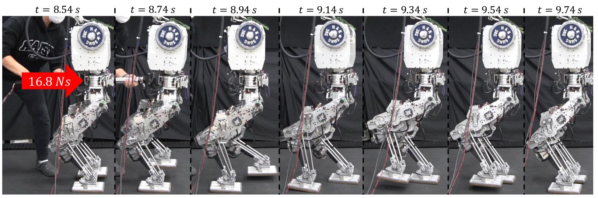

IEEE Robotics and Automation Letters, published online, 2023
JongHun Choe (1) Joon-Ha Kim (1) Seungwoo Hong (1) Jinoh Lee (2) Hae-won Park (1)
(1) Korea Advanced Institute of Science and Technology (2) Institute of Robotics and Mechatronics, German Aerospace Center

Abstract
This paper presents a reactive locomotion method for bipedal robots enhancing robustness and external distur- bance rejection performance by seamlessly rendering several walking strategies of the ankle, hip, and footstep adjustment. The Nonlinear Model Predictive Control (NMPC) is formulated to take into account nonlinear Divergent Component of Motion (DCM) error dynamics that predicts the future states of the robot in response to the walking strategies. This formulated NMPC enables the seamless application of these strategies improving push disturbance rejection performance. The proposed controller is validated in simulation and through an experiment on a bipedal robot platform, Gazelle, which confirms its effectiveness in real-time.
@ARTICLE{10168974,
author={Choe, JongHun and Kim, Joon-Ha and Hong, Seungwoo and Lee, Jinoh and Park, Hae-Won},
journal={IEEE Robotics and Automation Letters},
title={Seamless Reaction Strategy for Bipedal Locomotion Exploiting Real-Time Nonlinear Model Predictive Control},
year={2023},
volume={8},
number={8},
pages={5031-5038},
doi={10.1109/LRA.2023.3291273}}